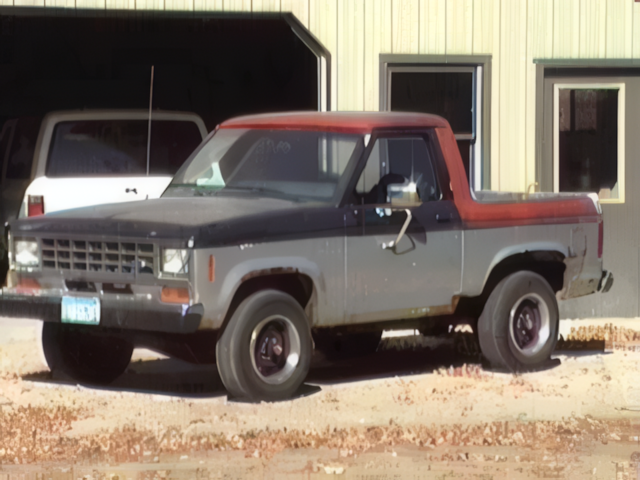
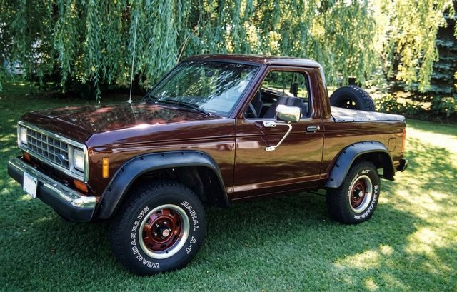

I bought this Bronco ll to use for parts, but after I used
the parts I needed.. it still ran fine, that is when I decided I would try to
convert it into a pickup. I had seen a piture of one somewhere.
as you can see, it was pretty rusty.

This was the outcome, of my first pickup conversion
I eventually added a 6 1/2' Western plow, and used
it for several years before selling it to a friend of mine.
It was a 1988 (the last year of that body style) with
a 2.9 v-6, and automatic transmission.